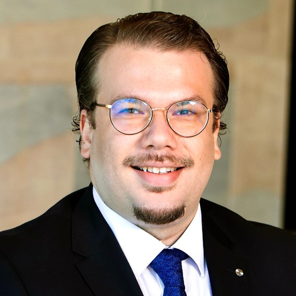
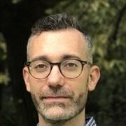

Models that explain
Connect mathematical theory and machine learning with mechanisms we can test.
Bringing computational and theoretical scientists together with experimental researchers to uncover how living systems work.
Join our communityHow do simple interactions give rise to the extraordinary organisation of life?
Computing Life is a meeting place for researchers using mathematical models, computational methods and experiments to address fundamental biological questions. We want ideas, data and methods to travel between disciplines — and new collaborations to grow from those conversations.
Our community builds on the Alan Turing Institute interest group, Learning the organisational principles of living systems, and continues independently.
Connect mathematical theory and machine learning with mechanisms we can test.
Bring experimental observations together, from molecules and cells to collective behaviour.
Find collaborators who approach the same biological question from a different direction.
Seminars, workshops and conversations across disciplines.
We’re planning seminars and a workshop to bring computational, theoretical and experimental researchers together, share ideas and spark collaborations.
Join our mailing list to hear about future events as plans develop.
Stay in the loopResearch Fellow · University College London
Antonio develops mathematical modelling and machine learning approaches to understand immune responses, with a focus on tuberculosis. His work connects mechanistic models with biological data.
Institutional profile
Assistant Professor · University of Essex
Michael leads the Unconventional Communications and Computing Laboratory. His research spans biological computing, molecular communication and bioelectronic interfaces.
Institutional profile
Associate Professor · Imperial College London
Ruben studies how space, time and precision shape living systems. He uses dynamical systems, stochastic processes and Bayesian inference to understand cell fate and biological organisation.
Institutional profileLecturer in Biomedical Engineering · University of Glasgow
Dadi’s research explores molecular communication and biological signal processing, including chemical reaction networks, microfluidic systems and engineered genetic circuits.
Institutional profileFuture events and news from Computing Life. Open to researchers across disciplines and career stages.
Sign up for seminar, workshop and community announcements. You can unsubscribe at any time by replying to an announcement.
Join the mailing listBefore subscribing, please read our mailing-list privacy notice.